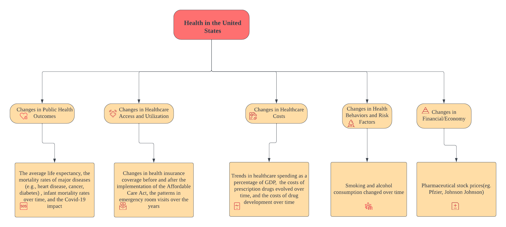
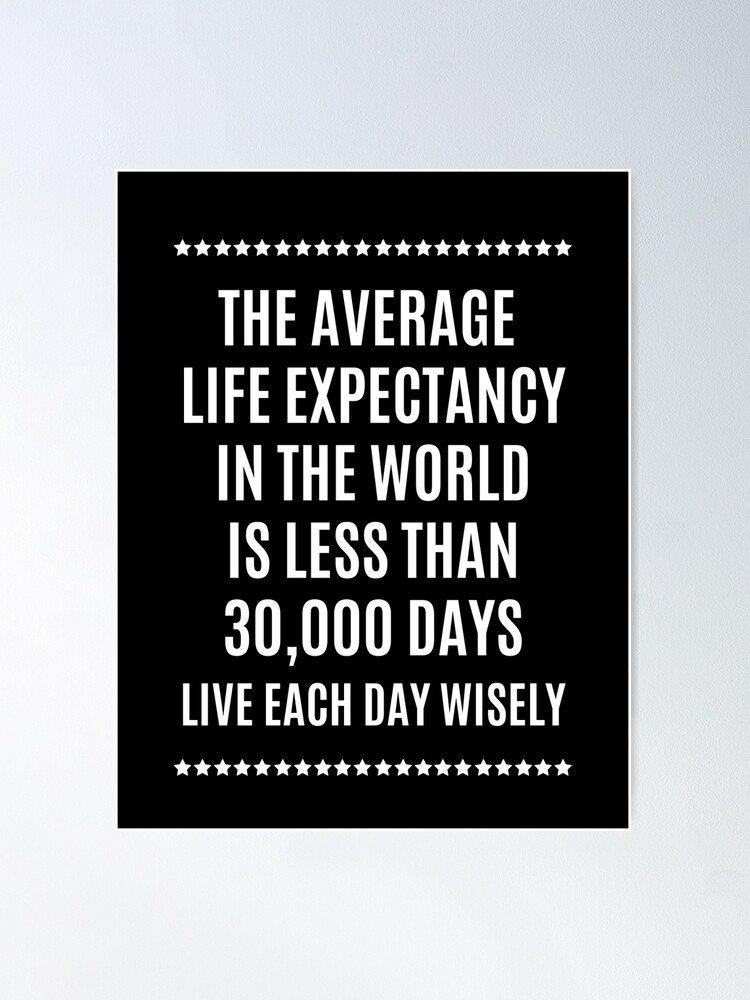

Conclusions
Revisit our Big Picture

As we can see from the Big Picture, to understand the overall health status of the United States, we need to look at various areas. Therefore, in this project, I studied five aspects of Health in the United States: Public Health Outcomes, Healthcare Access and Utilization, Healthcare Costs, Health Behaviors and Risk Factors, and Healthcare Financial Market. For Public Health Outcomes, I examined the average life expectancy, infant mortality rate, and three chronic diseases (heart disease, cancer, and diabetes). For Healthcare Access and Utilization, I looked at the prevalence of health insurance and how often Americans have visited emergency rooms in the past few years. For Healthcare Costs, I looked at the healthcare industry’s contribution to overall GDP, the cost of prescription drugs, and the cost of drug development. For Healthcare Behaviors and Risk Factors, I mainly examined Smoking and Alcohol Consumption. Finally, for the Healthcare Financial Market, I mainly selected four stocks: Pfizer, Vertex, TEVA, and SAGE, which represent the different sectors of the healthcare industry (Large-scale Pharmaceutical, Biotechnology, Generic and Specialty Drug, and Small and Medium-sized Biotech).
After the above comprehensive analysis and examination, we will have an extensive and in-depth understanding of Health in the United States.
PART 1: Public Health Outcomes

1. How has the average life expectancy in the US changed?
For the Average Life Expectancy, we first used Plotly and Tableau to do a data visualization of the average life expectancy and total deaths of COVID-19. We can see that in the past two decades, The average life expectancy of Americans has risen every year, reaching 79.1 years in 2019. However, the arrival of COVID-19 has caused a significant drop in the average life expectancy of Americans, with an average life expectancy of only 77 years in 2021. However, as the epidemic eases, average life expectancy rebounds, with an average of 78 years in 2022. We then used an ARIMA model and three deep learning models to predict future life expectancy, and we found that the model predicted that the average life expectancy of Americans in the future would rebound and then remain about the same.
2. What are the trends in the mortality rates of major diseases (e.g., heart disease, cancer, diabetes) over the last few decades?
For the mortality rates of major diseases (e.g., heart disease, cancer, diabetes) over the last few decades, I also used Plotly to show how they changed. We can clearly see that for the higher mortality rates of heart disease and cancer, there has been a dramatic decline in these two diseases over the last few decades. In the case of diabetes, the death rate was essentially flat until 2000 and has declined slightly in recent years. This is due to an improvement in the overall quality of life of Americans, as well as advances in medical care. I then used the ARIMA model to project future mortality rates for these three major diseases. I found that future mortality rates for these three diseases will remain flat for some time, implying that advances in medical technology over the past few decades have brought about dramatic reductions in mortality rates for these diseases but that we still do not have a more effective way to cure these diseases further at this time.。
3. How have infant mortality rates varied over time?
We can see from the data visualization that infant mortality rates have decreased from 0.94% in 1990 to 0.54% in 2021. I then used the ARIMA model to predict future infant mortality rates, and the results showed that there would be a small increase in infant mortality rates. I believe that the issue of infant mortality still deserves a great deal of attention because of the vast inequalities that exist due to race and economic income. Washington, in particular, has one of the highest infant mortality rates in the entire United States, and a black mother has more than three times the mortality rate compared to a white mother.
What’s more, I also used the ARIMAX model to find out how the average life expectancy of the US be influenced by the mortality rates of Cancer, Heart Diseases, Diabetes, and infant mortality rates (Adu, Appiahene, Afrifa, 2023). The best performing model I found is ARIMA(2,0,1). The forecasting results indicate that average life expectancy in the US is expected to continue increasing, but with a degree of uncertainty, as represented by the widening confidence intervals. This suggests optimism about future health outcomes. As we can see, the death rates due to cancer, heart disease, and diabetes are decreasing, and the infant mortality rate is also decreasing, which could be reasons for the increase in life expectancy. Meanwhile, we can see a decrease of average life expectancy around 2020, which could be due to the COVID-19 pandemic.
PART 2: Healthcare Access and Utilization
6. How has the rate of health insurance coverage changed before and after the implementation of the Affordable Care Act (ACA)?
First, I visualized the Health Insurance Uncoverage in the US, we can see that the rate of health insurance uncoverage in the United States has been on a decline since 2010, which is the year of the implementation of Barack Obama’s health care reforms. However, starting from 2017, the health insurance uncoverage rate began to rise slightly, which may be attributed to the policies of the Trump administration. It is noteworthy that the 18-64 age group has consistently had the highest rate of medical insurance non-coverage among all age groups.
7. What are the patterns in emergency room visits over the years?
Based on the numbers of emergency room visits, we can see that those aged 65 and above have always been the group with the highest rate of emergency room visits, indicating a greater prevalence of health issues or medical emergencies within this age group. And the 45-64 age group has the lowest rate of emergency room visits, suggesting a notable disparity in emergency healthcare utilization across different age groups, with those in the older demographic requiring more frequent and intensive medical attention. Understanding these trends is crucial for healthcare resource allocation, as it highlights the need for targeted interventions and support systems to address the unique healthcare needs of diverse age groups within the population.
PART 3: Healthcare Costs
4. How did the Covid-19 influence the people’s health in the US? And how did the pandemic influence the GDP contribution of Health Industry?
From the fact that the average life expectancy of Americans has dived in 2020, we know that COVID-19 has had a very negative impact on the health of Americans, especially the elderly or those with underlying diseases. Then, I applied the SARIMA Model to the GDP Contribution of the Healthcare Industry and found that the GDP Contribution of the Healthcare Industry will continue to rise in the future, and the upward trend will be more drastic after COVID-19. The healthcare industry in the US is expected to keep growing in the future. Healthcare is becoming more and more important in the US economy after the COVID-19 pandemic.
5. Are there seasonal patterns or cyclical fluctuations in the health industry’s GDP contribution, and do they correspond to specific events or seasons?
After applying the SARIMA model to the GDP Contribution of the Healthcare Industry, I used the AIC, BIC, and AICc values to find the best model. As a result, I found the best model is SARIMA(0,1,1)(0,1,1)[4], suggesting that the health industry’s GDP contribution has seasonal patterns. This could arise from fiscal policy cycles that impact healthcare spending or seasonal variations in healthcare service utilization—for instance, higher hospital admissions during winter months due to flu season. Also, implementing healthcare policies, which often follow a cycle, might lead to discernible seasonal effects on the economic indicators within the healthcare sector.
8. How have the costs of prescription drugs evolved over the past 20 years? And How have the costs of drug development changed over time? Is there a relationship between the costs of prescription drugs and the public health outcomes in the US?
From the data visualization of prescription drug expenditures in the US, we can see that only 2.7 billion dollars were spent on prescription drugs in 1960. However, since 2000, the Expenditure has grown drastically from 122 billion dollars to 405.9 billion dollars. Interestingly, we can also see that Expenditures increased even more hugely after COVID-19. The costs of drug development increased greatly from the 1970s to the 2010s as well.
Next, I employed the VAR model to explore the potential relationship between the costs of prescription drugs and the average life expectancy. The most robust model I identified is VAR(3), and I conducted forecasting for Life Expectancy and Prescription Drug Expenditure based on this model. The results indicate a fluctuating pattern. The Average Life Expectancy is expected to decrease for some years, then rebound. In contrast, the Prescription Drug Expenditure is anticipated to continue its upward trajectory for the next ten years. This suggests a potential correlation between these two variables. We can speculate that the decrease in life expectancy could be attributed to the COVID-19 pandemic, which has had a profound impact on public health. Consequently, prescription drug expenditure is expected to rise, potentially influencing the average life expectancy.
PART 4: Health Behaviors and Risk Factors
9. How have smoking and alcohol consumption rates changed over time, and what impact have they had on public health?
Before 2009, the number of smokers in the US showed a slight declining trend with some fluctuations. Starting from 2010, there was a sharp decline in the number of smokers. This could be attributed to the passage of The Family Smoking Prevention and Tobacco Control Act by the U.S. government in 2010. The act implemented regulatory measures on tobacco products, including prohibiting advertising and promotional activities for tobacco products, and requiring health warnings on tobacco product packaging. Additionally, the U.S. government imposed high taxes on tobacco products. It can also be observed that alcohol consumption in the US was on the rise from 1935 to 1980, peaking in 1980. During the period from 1920 to 1933, the US implemented Alcohol Prohibition, we could speculate a sharp decrease in alcohol consumption. After the repeal of Alcohol Prohibition, alcohol consumption showed an upward trend. It is also noted that after reaching a low point in alcohol consumption in 1998, the trend has been increasing in recent years.
Next, I employed the VAR model to explore the potential relationship between Smoking Prevalence, Alcohol Consumption, and the Mortality rates of major diseases (Cancer, Heart Disease, Diabetes). The most robust model I identified is VAR(6), and I conducted forecasting for Smoking Prevalence, Alcohol Consumption, and the Mortality rates of major diseases (Cancer, Heart Disease, Diabetes) based on this model. The forecasting results show that the total number of major diseases first increases and then decreases. The number of adult smokers shows an increasing trend, followed by a decrease. The Alcohol Consumption shows a slight increase and then a considerable reduction. We can find that the trend of Total Major Diseases Deaths is consistent with the Number of Adult Smokers and the Alcohol Consumption, both of which are increasing and then decreasing. This can indicate that unhealthy behaviors can significantly affect people’s health outcomes.
PART 5: Healthcare Financial Market
10. How to use time series analysis and forecasting models to predict the healthcare stock prices? And what’s the relationship between them?
First, I used ShinyApp to show changes in stock prices in the healthcare sector over time. Then, I predicted four stocks (Pfizer, Vertex, Teva and Sage) using an ARIMA model. We can see that Pfizer and Vertex’s stock prices will increase while TEVA and SAGE’s stock prices will decrease. I also used the VAR model to test the relationship between them, and the results of VAR(1) show that the predicted stock prices of Pfizer and Vertex are positively correlated. In contrast, the expected stock prices of Teva and SAGE are negatively correlated.
Furthermore, I harnessed the power of three deep learning models to forecast Pfizer and Teva’s stock prices. Upon comparing the evaluation metrics, it was evident that the deep learning models outperformed traditional methods, underscoring their superior prediction performance.
Meanwhile, I found that Pfizer and TEVA stock returns have a volatility clustering phenomenon, so I applied the GARCH model on top of the ARIMA model and showed their volatility plots.